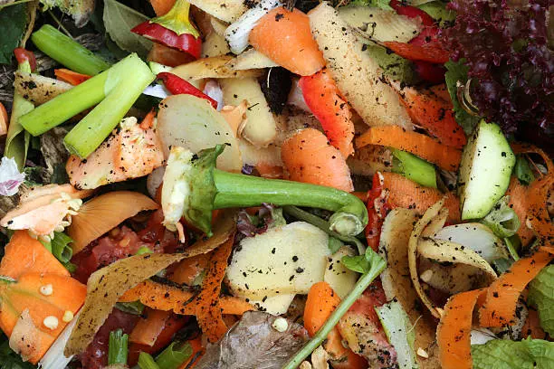

Vermicultura y usted
¿Qué es la vermicultura?
Es una Biotecnología que aplica normas y técnicas de producción utilizando las lombrices rojas californianas para reciclar residuos
orgánicos biodegradables.
 ¡Miralas trabajar!
¡Miralas trabajar!
Porque es importante?

Los residuos organicos domesticos representan el 50% de lo que tiramos a la basura semanalmente.
(y ni hablar si en tu casa toman mate!)
Estos terminan en vertederos contaminando suelo, atrayendo pestes y generando enfermedades.
Ventajas de compostar
- Tendremos
en casa abono gratis y de gran calidad.
- No mas bolsas olorosas! No mas moscas molestas!
- Reducis a la mitad la basura que tiras.
- Ayudamos al medio ambiente!
- Si compostamos creamos valor, algo que era
considerado un desperdicio pasa a tener un valor que se puede medir.
- Es muy facil crear un mini emprendimiento, ya sea produciendo alimentos o
lombricompuesto.
- Tendremos en casa abono gratis y de gran calidad.
- No mas bolsas olorosas! No mas moscas molestas!
- Reducis a la mitad la basura que tiras.
- Ayudamos al medio ambiente!
- Si compostamos creamos valor, algo que era considerado un desperdicio pasa a tener un valor que se puede medir.
- Es muy facil crear un mini emprendimiento, ya sea produciendo alimentos o lombricompuesto.
¿Como empiezo?
La vermicultura es una actividad sencilla, poco costosa y segura, que puede ser realizada por niños o personas mayores.
Solo necesitamos:
- Hojas de arboles secas, de arboles no resinosos.
- Restos de comida: excluyendo (en principio) carnes, aceites y sales o condimentos fuertes.
- Carton, papel reciclables cortados en tiras.
- Cascaras de huevo o maní.
- Pasto seco.
Mini-Instructivo
El método mas sencillo y rápido es empezar con un cajon de mini-composteo.

Envolver un cajón de verduras en una bolsa de residuo (o un material mas respirable si va a estar en el patio). En ella empezamos con una capa de hojas de arboles secas/pasto seco/papel de diario cortado/carton en tiras (lo que llamaremos material marrón) y ensima de esta una capa de residuos de cocina. Y empezamos a intercalar capas de material marroón con materia orgánica.
Humedecemos lo suficiente como para mojar todo, pero no para que quede mucho liquido en el fondo, lo cubrimos con una remera vieja o con la misma bolsa y lo dejamos 48 hs.
Pasado este tiempo revisamos la temperatura del cajon, si esta levantando temperatura es un buen signo. Revolvemos todo el contenido y comprobamos humedad.
Una vez que la temperatura empieze a bajar (a menos de 30 grados), agregamos material marrón humedecido en una esquina y en el a las lombrices. Y tapamos levemente.
Y ahora listo! Ahora a esperar.
Una vez que no se pueda identificar el material que pusimos es hora de volver a agregar material marrón y materia organica.
Para mas info, visita nuestra tiendita o dejanos una consulta. abajo!
Calculadora de lombrices
| Conversor lombrices a gramos de lombriz. | ||
| Unidad | Gramos | |
| Lombrices x gr. | 0 | |
| Gr lombriz a unidad | 0 | |
| Composteras | ||
| Largo | Ancho | Diametro |
| Datos | Min (gramos) | Max (gramos) |
| Cant. Lombrices | ||
| Cant. Comida semanal | ||
| Proyeccion de reproduccion (gramos) | ||
| Mes 3 | Mes 6 | Mes 9 |
| 0 | 0 | 0 |
Porque/Como/Cuando y donde (!) usar la calculadora
El conversor nos permite saber cuantas lombrices hay en x cantidad de gramos de lombriz. Esto es super importante para saber cantidades mínimas y máximas para poder empezar. Muy pocas lombrices procesan poca comida, pero estar cerca de las poblaciones máximas baja la reproducción. Otro punto a tener en cuenta es la superficie, esta determina la cantidad máxima de lombrices que podemos tener (y por consiguiente la cantidad de comida que pueden procesar por semana). En la sección podemos introducir el largo y ancho, o el diámetro de nuestra compostera, además hay algunas pre-cargadas. Una vez que introducimos esos datos. Le damos a Calcular. Y nos dará las cantidades mínimas y máximas para nuestra compostera, además de las conversiones que le pidamos.
“Tengo un balde de 20lts, me dice que el mínimo son 150 gramos de lombriz (unas 350 lombrices) ... pero solo tengo 50 lombrices ¿Qué hago? ¿Se me van a morir?¿Pido más?”
Nah. Pero a tener en cuenta que 50 en un espacio tan grande (en comparación a las 350 en el mismo espacio) van a consumir menos, van a tardar mas en reproducirse y…nada…eso, no es nada grave.
Lo mismo pasa con la cantidad de comida que necesitan.
"¿500gr semanales? ¡No llego a eso!"""La población se va a adaptar a la cantidad de comida que proporcionemos, además hay que contar la calidad y cantidad de material marrón que ponemos, estos son una fuente importante de la alimentación y no pesan tanto.
Te puede interesar
Nuestro Mercadito
Buscanos en Mercadolibre: VermiBA
Todas las publicaciones contienen:
- Bolsita/caja reciclable.
- Asesoramiento individual en todo el proceso.
- Vienen en todas las etapas, cocones (huevecillos de lombriz) que pueden dar entre 2 y 10 lombrices, juveniles y adultas.
- Siempre ponemos de mas!.
- Ademas de comida para una semana aprox.
Pack Intermedio: 50gr (100+ Lombrices)
Empeza tu compostaje con este pack! 50(+)gr de lombrices pesadas en limpio. Incluye manual de uso básico/avanzado por mail/whatsapp.
Pack Pro: 200gr
Mas de 550 lombrices. Maxima población para el pequeño compostador. Producí montones de humus al mes! Incluye manual de uso básico/avanzado por mail/whatsapp.